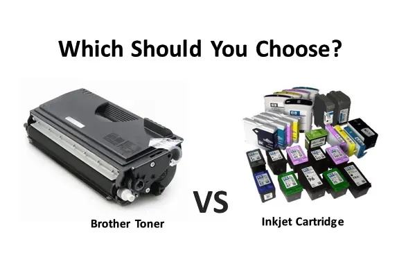
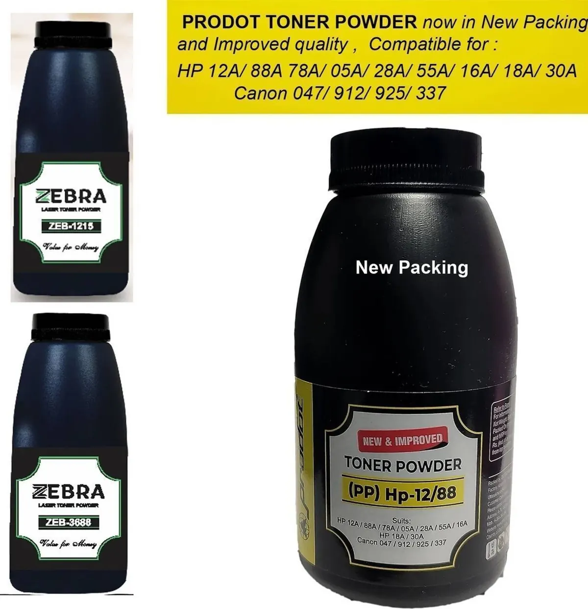

Printers
Ink vs Toner: What Is the Difference and Which Do You Need?
Compare ink and toner, understand inkjet and laser printing, and choose supplies based on print volume, quality and running costs.
Introduction: Two Supplies, Two Printing Technologies
Ink and toner are used for printing details. Inkjet printers use liquid inks which are printed onto paper using micro-nozzles. Laser printers use toner which is a powder.
Depending on what you want to print, how much you want to print and the quality of print you want you may find one printer better than the other. If you are looking at the cost of a printer it is good to know what type of inks/toners you will be using to make sure you get a good deal. Knowing the difference will help you work out what is best for you and make sure you get compatible cartridges.

What is Printer Ink?
Printer inks are liquid dyes and pigments. They can be found in cartridges or tanks. Inkjet printers use very small amounts of ink to print onto paper. Most printers will use Cyan, Magenta, Yellow and Black. Some photo printers will use additional colours.
Depending on the printer, ink and paper you can produce detailed coloured graphics and photos. There are different types of inks available. Dye based inks can give vibrant colours while Pigment based inks will often be used for text. This will depend on the product so always check the specifications of the printer and paper.
What is Toner?
Toner is a fine powder used in laser printers and some other printing methods. The printer prints an image using electrostatics. The toner is then transferred to the paper and fused (heated) onto the paper. Toner can be a simple powder in a cartridge.
Laser printers are often used for high volume text printing. They can produce crisp text and high quality prints quickly. Colour laser printers will use multiple colours to produce graphics. Toner isn’t a liquid.

Inkjet or Laser Printers?
Inkjet printers can be a great option for home use. They can be compact and sometimes cheaper. Depending on the design of the cartridge, the amount of coverage you have on your print and whether they use cartridges or refillable tanks the price can vary.
Laser printers can be a great option for high volume text printing. They can be fast and offer high page yields with the toner cartridges. However they can be more expensive to buy initially, especially colour printers. Some printers can require an extra imaging drum which can increase the cost. It really depends on how much you are printing.
Print Quality
Inkjets can be a good option if you want to print photos or coloured graphics. Using the right photo paper and ink you can achieve smooth gradients and detailed prints. However the quality can vary depending on the printer. Office papers can absorb ink differently.
Lasers will typically produce crisp text which is perfect for printing reports, forms and business related documents. Colour lasers can be used for charts and general graphics. However may not be as good for photos. If colour accuracy and quality is important make sure to check sample prints from the exact model.
Cost and Page Yields
Make sure to check how many pages they claim to print with the inks/toners. This will be based on standardised test documents. If you are printing lots of photos, solids colours or detailed graphics you may find that you use much more ink/toner than if you were just printing a text document. Inkjets can also have more clean cycles.
To get an approximate idea of how much you will pay per page divide the price by the number of pages. Take into consideration your documents. Don’t forget to factor in the cost of paper, parts for maintenance and servicing. If using the printer for business consider how many pages you are likely to print per month. Make sure it is suitable for your workload. Some printers may be cheap to buy but expensive to replace.
Printing Occasionally
Inkjets can suffer from drying out and blocked nozzles if not used for a long period of time. Some printers have maintenance cycles which can cause ink to be used. If you are only going to be printing occasionally check manufacturers guidelines.
Toner is a dry powder so won’t dry out. This can make lasers a good option for some low volume text printing. Make sure to store them properly. Toner cartridges and other parts will have guidelines on how to handle them. Always follow guidelines on the packaging.
Best for Home, Students and Small Offices
If you are a student and only printing occasionally an inkjet can be suitable. If you are mainly printing text and regularly then a monochrome laser can be a good option. If you are printing lots of colour a refillable ink tank can be a good option. Just make sure to compare prices and maintenance.
If you are in a small office and printing invoices, contracts and reports throughout the day a laser can be a good option. If you are printing lots of colour marketing materials you may need a colour inkjet or colour laser. Work out how many pages you are likely to print per month and compare ink prices in your area.
Safe Handling and Replacement
Always use the correct type/model of ink/toner. Ink cartridges should be handled carefully. Don’t touch the nozzles or electrical parts. Keep the protection on until ready to fit. Store unopened cartridges as per the packaging.
Toner is a fine powder. Don’t inhale any. If any is spilled follow manufacturers guidelines. Don’t use a normal domestic vacuum unless the manufacturer suggest a suitable method. Let the laser printer cool down before opening any serviceable parts.
Conclusion
Ink is a liquid used in inkjet printers. Toner is a powder used in laser printers. Inkjet printers can be a good option if you want to print colour and photos. Laser printers can be a good option if you are printing lots of text. Consider print quality, page yields, cost of ink, maintenance and how many pages you will be printing per month. The best option for you will be one that suits your documents and budget.
Need a hand with your printer or laptop?
Printerworld sells printers, laptops and genuine supplies, and repairs and services both. Bring in your model number and we will help you get it right.